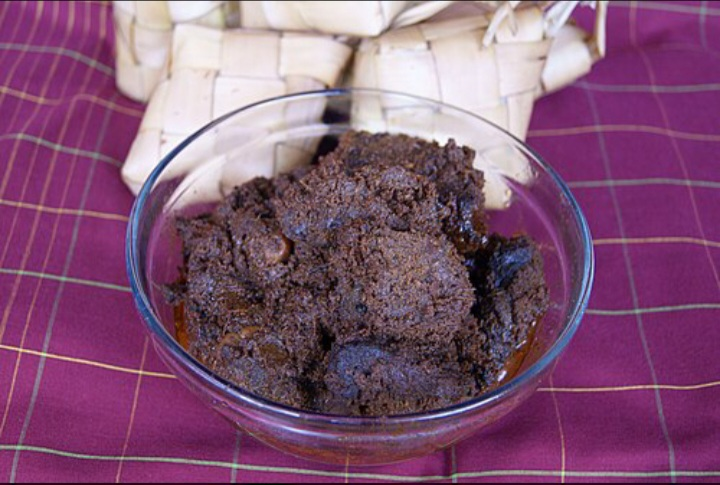

menggunakan aneka rempah-rempah dan santan. Hidangan ini
terlahir akibat perilaku sedari lampau suku Minangkabau yanggemar merantau ke sana kemari sehingga butuh banyak
perbekalan, terutama hidangan yang awet, tahan lama, danbercita rasa sesuai lidah asli orang Minang. Awalnya
menggunakan daging rusa. Namun, karena rusa mulai sulitdidapat, bahan dasarnya beralih menjadi daging sapi atau kerbau
